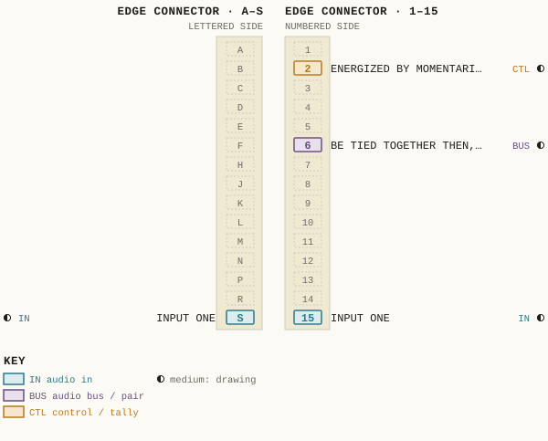
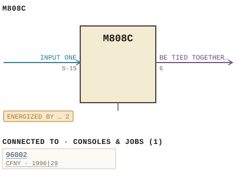

M808C
| Type | module |
| Category | AMPLIFIERS |
| Try it | simulator & front panel · download package (zip) |
| Earliest dated evidence | 1994|27 — original file date |
| Evidence | saved 1994-08-09: WBSps Engineering from H drive-20261018T013433Z-1-001/WBSps Engineering from H drive/WBSps - Word Perfect Manuals/M808C.WP |
| Confidence | medium |
| All years found | 1994|27 |
| Used in jobs | 96002 (1996|29) |
| Variants | M808, M808A, M808B |
| Folder | Modules/AMPLIFIERS/M808C |
Connections
What it is made of and what it is part of.
Pictures


M808C.pinout.svg

M808C.connections.svg 1996 - 96002-01-003 - CFNY TURRET INTERFACE - ISS 1.jpg
1996 - 96002-01-003 - CFNY TURRET INTERFACE - ISS 1.jpg 1996 - 96002 - DOC - Scan_20210323 (3).jpg
1996 - 96002 - DOC - Scan_20210323 (3).jpgPinout & connections
Each contact as its own documents name it: 4 named (4 medium confidence). An empty slot is a contact no page names. Hover a contact for its source; the table under the drawing lists them.
pinout (SVG) · connections (SVG) · pins (JSON)
Pin evidence — 4 contacts
| Pin | Signal | Kind | Confidence | Read from | Source |
|---|---|---|---|---|---|
| 2 | ENERGIZED BY MOMENTARILY GROUNDING THE CONTROL T | control / tally | medium | prose | 1994 - M808C - M808C - 808-02-004 - COMPONENT…, p. 1 “Latching Circuit K1 is energized by momentarily grounding the control terminal at pin 2.” |
| 6 | BE TIED TOGETHER THEN, THE CANCEL BUSS | audio bus / pair | medium | prose | 1994 - M808C - M808C - 808-02-004 - COMPONENT…, p. 1 “If many cards are to be tied together then, the cancel buss terminals (pin 6), must be tied together.” |
| S | INPUT ONE | audio in | medium | prose | 1994 - M808C - M808C - 808-02-004 - COMPONENT…, p. 1 “Input Input One is applied through edge connector pins 15 and S.” |
| 15 | INPUT ONE | audio in | medium | prose | 1994 - M808C - M808C - 808-02-004 - COMPONENT…, p. 1 “Input Input One is applied through edge connector pins 15 and S.” |
Physical manual inventory
| Item | Location | Status | Scanned |
|---|---|---|---|
| 8x1 relay switcher | LOOSE BOX |
Documents (1)
| Year | File | |
|---|---|---|
| 1994|27 | 1994 - M808C - M808C - 808-02-004 - COMPONENT LAYOUT.wp | note |
Parts list — board M808C (7 parts)
From M808C.WP; also in timelines/data/bom.csv.
| Ref | Part | Value | Manufacturer | Mfr part no. |
|---|---|---|---|---|
| CR1 | Diode, Zener | Motorola | 1N746A | |
| Q1 | Transistor | Motorola | 2N6731 | |
| R1 | Resistor | 1/4W 5% | 4K7 | Philips CR25 |
| CR27 | Diode | Motorola | 1N4003 | |
| CR28 | Diode, Zener | " | 1N746A | |
| Q2 | Transistor | " | 2N6731 | |
| R19 | Resistor | 1/4W 5% | 4K7 | Philips CR25 |
Consoles & jobs it is connected to (1)
Their own drawings name this module.
| Job | Year | Drawing | Page |
|---|---|---|---|
| 96002 | 1996|29 | 1996 - 96002-01-003 - CFNY TURRET INTERFACE - ISS 1.jpg | 1 |
Named in other drawings & documents (6)


From the manuals
Each manual split into its sections. Text that is the same in many Ward-Beck manuals (warranty, address, standard notes) is kept once on the Boilerplate page and linked.
Specifications (1)
Technical Data — 707 words · 1994 - M808C - M808C - 808-02-004 - COMPONENT LAYOUT.wp, page 1
M808C 8x1 RELAY SWITCHER
Configuration: Single 8 input to 1 output or dual 4 to 1 switcher.
Latching: Either self or external. Determined by conditional strapping.
Cancel: Only on 8 to 1 switcher.
Frequency Response: Not applicable. The input is switched directly to the output.
Input Impedance: Optional.
Phasing: Numbered inputs are in phase with the numbered outputs.
Power Requirements: +24 volts dc, 35 mA.
Ambient Temperature: 0 to 50 degrees Celsius.
Dimensions: 1.00" wide x 2.75" high x 10.60" deep.
Weight: 180 grams (7 ounces). GENERAL
M808C 8x1 RELAY SWITCHER
The M808C Relay switching module was designed to provide selection of any one of 8 inputs to a single output using a single wire for both control and tally of each input. This versatile module can be either self latching or latched by external circuitry. The input capability can be expanded beyond 8 by connecting together a number of switching modules. This module may also be used as a dual 4x1 switcher if external latched or if a small number of components are added. Input
Input One is applied through edge connector pins 15 and S. When K1 is energized, the signal will pass to the output buss (pins 3 and C) through the optional isolating resistors R3 and R4. Links 17 and 18 are cut when resistors R3 and R4 are installed.
Latching Circuit
K1 is energized by momentarily grounding the control terminal at pin 2. At the same time Q1 will be turned off as a result of the ground being applied to the base through isolating diodes CR2 and CR5. Q1 provides the ground return path through the associated relay holding contacts. Thus when Q1 turns off, any previously latched relay will de-energize and open.
When the momentary ground is removed from pin 2, Q1 will turn on in a few micro-seconds providing the ground return path for K1 through its holding contacts and CR3 (the turn on time of Q1 is much shorter than the time required for K1 to open its contacts).
Grounding the cancel buss at pin 6 will also turn off Q1 and therefore de-energize any relay that may be latched up on the card. If many cards are to be tied together then, the cancel buss terminals (pin 6), must be tied together.
If the relays are to be held latched by some external circuitry, then pin A should not be grounded.
Prioritized Selector
To build a prioritized selector, a momentary SPDT switch is required for each control input. The N.O. contacts of the switches are connected to the control inputs while the N.C. contacts are connected to the armature of the switch with the next lower priority. The armature of the switch with the highest priority is connected to ground.
Thus if more than one switch is pressed, only the switch with the higher priority will ground its associated control input. This prevents more than one relay being energized at any one time.
Tally lamps may be tied to the control wires to indicate which relay is energized.
To expand the number of inputs beyond 8, the output (pins 3 and C) and the cancel buss (pin 6) must be connected to the outputs and cancel busses of the other modules.
Dual 4x1 configuration
In order to use the card as a dual 4x1 selector, links LK1, LK2, LK3, LK4, and LK7 must be cut and links LK5 and LK6 must be shorted. This disconnects the cancel and pins 6 and F are now the second output. The card must now be externally latched (pin A ungrounded) or the additional components should be added so that inputs 5, 6, 7 and 8 have their own latching circuit comprised of CR27, CR28, Q2, R19 and R20. CR1 Diode, Zener Motorola 1N746A
CR2 To Diode " 1N4003 CR26
K1 To K8 Relay Omron G6A-434P-ST-US 24V DC
Q1 Transistor Motorola 2N6731
R1 Resistor 1/4W 5% 4K7 Philips CR25 R2 " 15K " "
PCB Printed Circuit Board WBS 14-287
Additional Components for Dual 4x1 Switcher
CR27 Diode Motorola 1N4003 CR28 Diode, Zener " 1N746A
Q2 Transistor " 2N6731
R19 Resistor 1/4W 5% 4K7 Philips CR25 R20 " 1/4W 5% 15K " "
M808C
8x1 RELAY SWITCHER Issue #1
MW94001/M808C .wp
- source: 1994 - M808C - M808C - 808-02-004 - COMPONENT LAYOUT.wp, p. 1